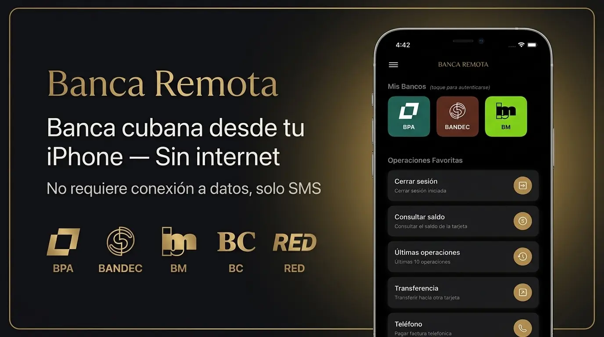
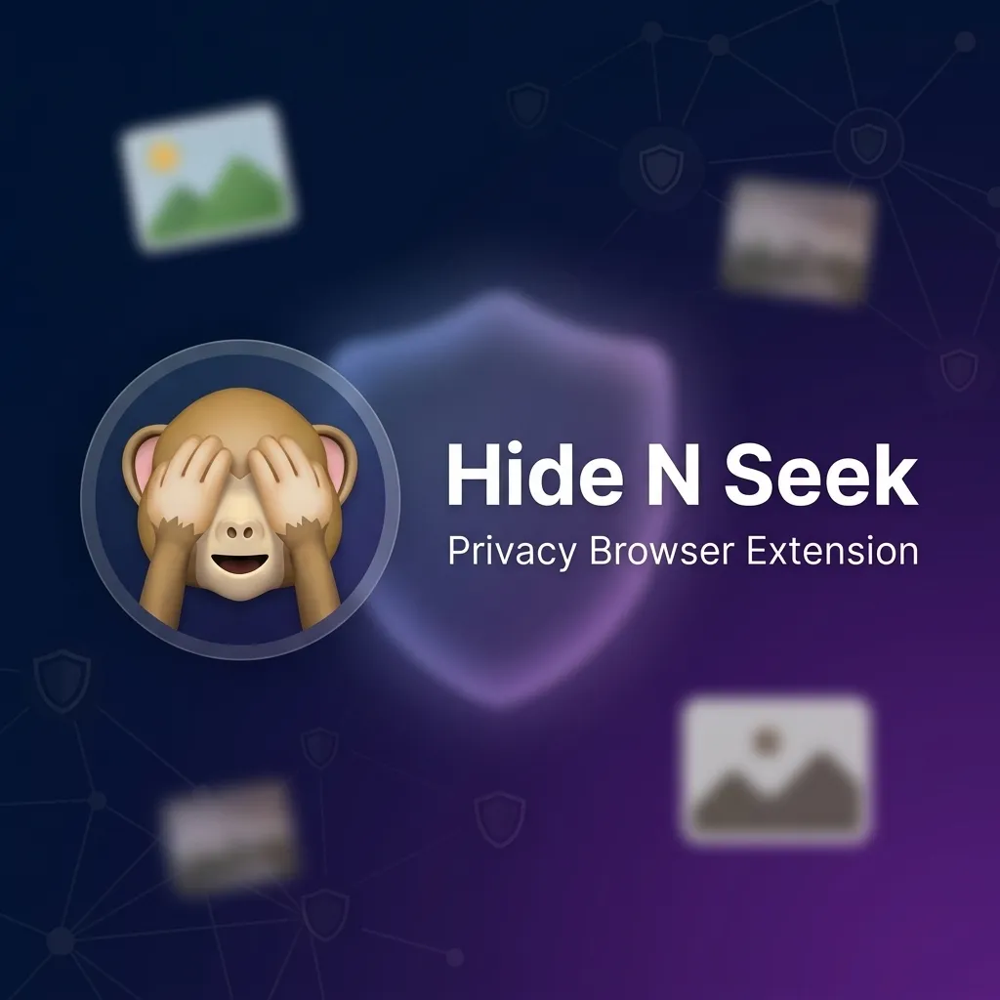
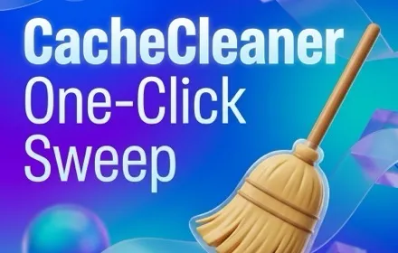
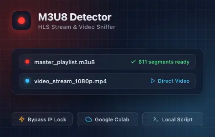
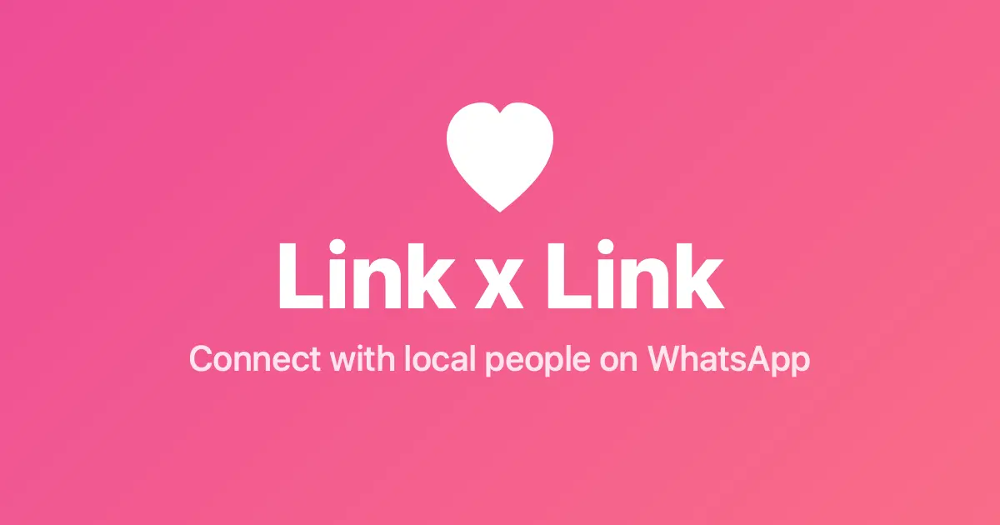
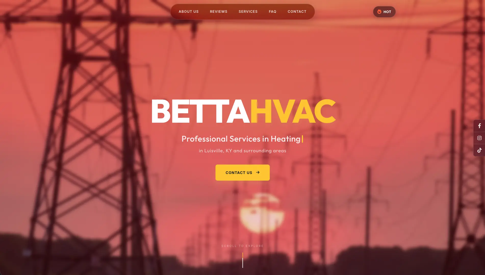
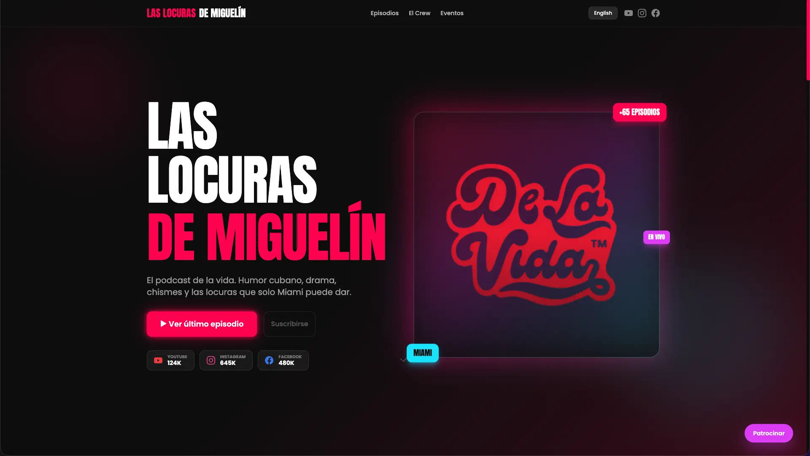
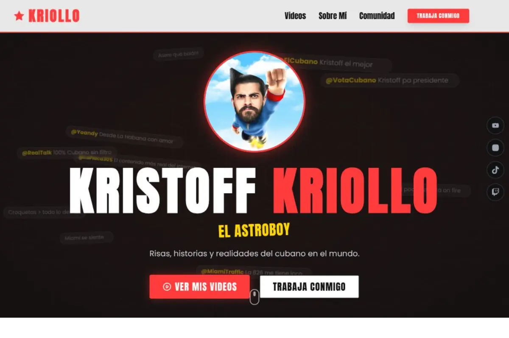

Banca Remota — Cuba
Native iPhone app for Cuban banking via USSD codes. Works entirely offline, storing cards, nauta accounts, utility bills, and biometric-protected keys locally.
Use the Tab key to move through links, buttons, and form fields. Tooltips appear on hover or keyboard focus.
A deep dive into my professional journey through code and design.

Native iPhone app for Cuban banking via USSD codes. Works entirely offline, storing cards, nauta accounts, utility bills, and biometric-protected keys locally.
The ultimate multi-platform media player. Stream from Jellyfin, Plex, or WebDAV, and play local files with automatic artwork and subtitles.

A high-performance browser extension designed to help you browse the web safely and discreetly. Automatically hides sensitive images, videos, and thumbnails.

One-click browser data cleaner for developers. Sweep away cookies, localStorage, sessionStorage, IndexedDB, and CacheStorage instantly.

High-performance browser extension that detects and resolves HLS (.m3u8) video streams, bypassing IP-locks, and exports ready-to-use scripts for ffmpeg, shell, and Google Colab downloads.

Tinder-style PWA for browsing people profiles with swipeable horizontal cards and one-tap direct WhatsApp connect links.

Scalable corporate platform for HVAC services, featuring automated quote generation and customer management.

Highly dynamic entertainment landing page with immersive design and fluid animations.

Modern VOD platform landing page focused on UX/UI excellence and brand storytelling.